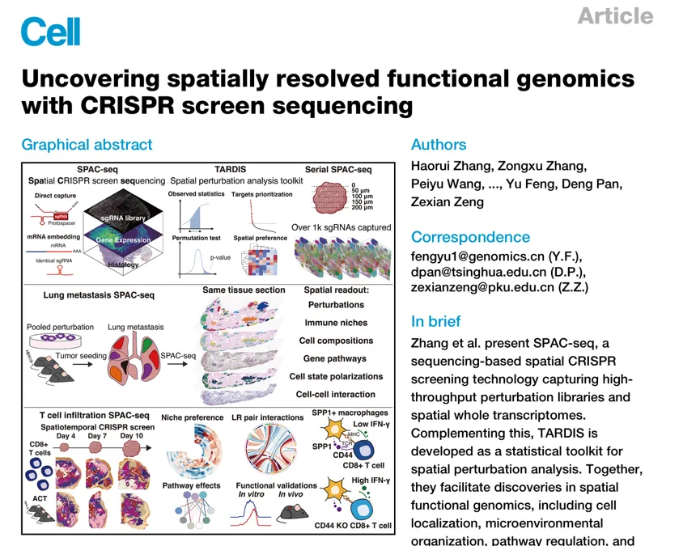
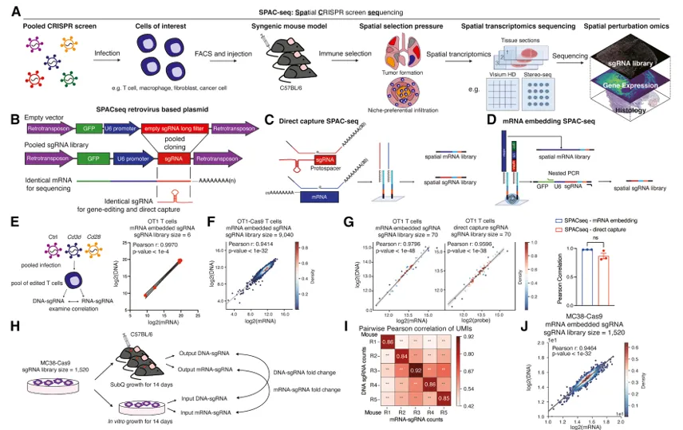
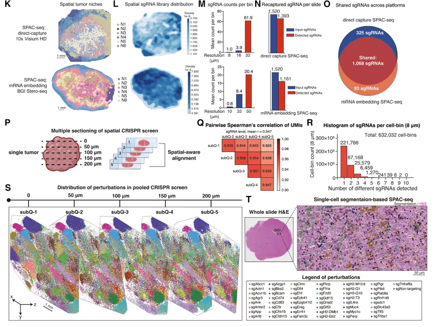
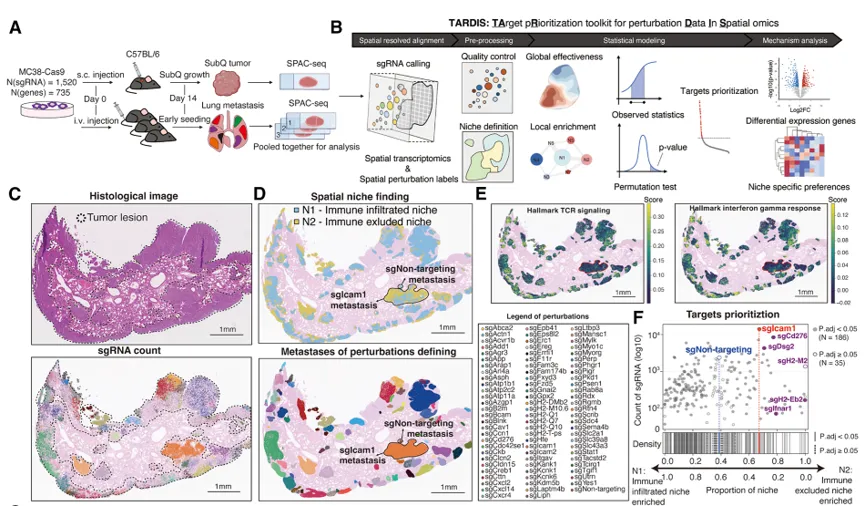
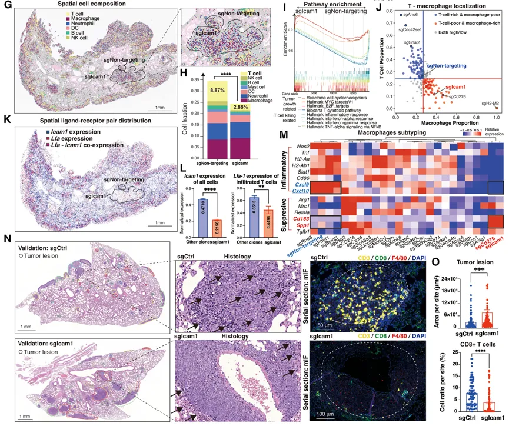
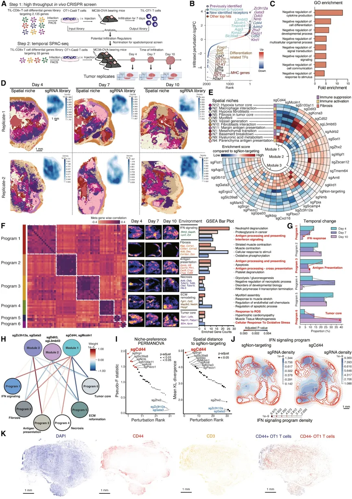
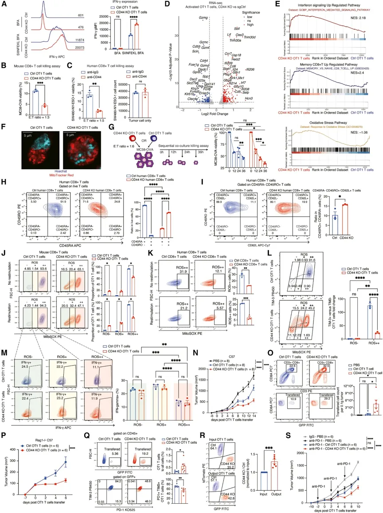
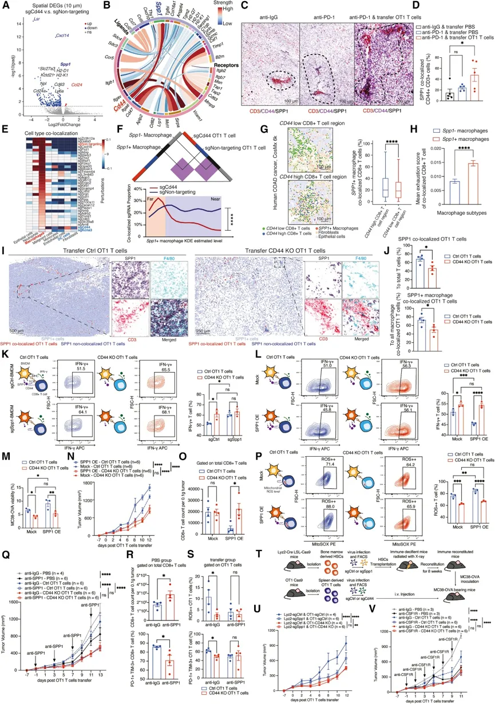
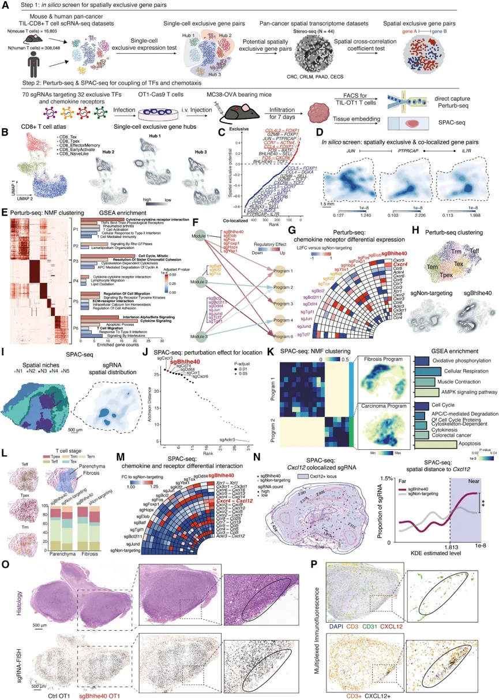

清北联合发布《Cell》：利用CRISPR筛选测序解析空间分辨功能基因组学
原文：https://mp.weixin.qq.com/s?__biz=MzAwMzIzOTk5OQ==&mid=2247538463&idx=1&sn=244f53adc63e47981298023eb3ad9908&chksm=9b3c2e4fac4ba7595cf057617ff26d6d932cd35cfdc16f4d0424c07f429afcc2a1e6c2e5f959#rd 合集：文献速递
一、写在前面
文章《 Uncovering spatially resolved functional genomicswith CRISPR screen sequencing 》 （IF= 42.5 ） 发布于**《 Cell 》。**
Doi：10.1016/j.cell.2026.04.049

随着单细胞分辨率空间转录组技术的出现，研究人员现在能够对组织生态系统（如肿瘤微环境）进行全转录组层面的精细剖析，从而深入研究组织结构、基因表达模式及细胞社群。然而，尽管空间组学提供了详尽的“图谱”，但目前仍缺乏有效的工具来建立基因表达与其空间表型功能效应之间的因果联系，也未能充分揭示驱动这些过程的调控通路。
为了解决这一难题，作者开发了“空间CRISPR筛选测序（SPAC-seq） ”——一种高通量的空间CRISPR筛选平台，以及“TARDIS” ——一套专门用于空间组学扰动数据的统计分析与靶点优先排序工具包。借助SPAC-seq 和 TARDIS，作者将基因扰动与空间表型及信号通路建立起了关联，揭示了肿瘤细胞中 Icam1 的缺失如何通过免疫抑制和巨噬细胞极化来促进转移。在 CD8+T 细胞中，作者还阐明了 Cd44 通过与巨噬细胞上的 Spp1 相互作用，从而发挥调控空间表型的作用。此外，作者也验证了“转录因子-趋化因子受体轴”将细胞状态与趋化运动相偶联的模型。SPAC-seq 和 TARDIS 为在多样的生物学和疾病背景下研究具有空间分辨率的功能基因组学与信号通路提供了一个高效的框架。
如果需要单细胞数据分析教学、生信热点全文复现、自测数据个性化分析辅导、实验科研服务和常态化实验学习，欢迎联系客服微信[Biomamba_zhushou]。
二、主要内容
1 用于空间CRISPR筛选和空间转录组测序的SPAC-seq
首先，作者介绍了SPAC-seq整体工作流程 和*核心载体系统的设计原理，流程分为文库构建与细胞导入 ：首先将混合的sgRNA（单向导RNA）文库转导至感兴趣的靶细胞类型中，并通过荧光分选技术* 进行富集；体内模型与生物学选择 ：将经过基因扰动的细胞注射到同系小鼠模型的特定部位或器官中，使其经历特定的体内生物学过程（如肿瘤转移或T细胞浸润）；组织切片与空间捕获 ：收集目标组织并制备成切片，随后利用具有单细胞分辨率的空间转录组平台（如 Visium HD 或 Stereo-seq）进行分析，通过原位同时捕获 sgRNA文库和 mRNA，结合二代测序（NGS），最终实现将 sgRNA信息和转录组数据精准映射回其原始的空间位置三部分（Fig.1A）。
核心载体系统（SPACseq）设计巧妙地利用了逆转录病毒质粒系统， 质粒中包含一个用于细胞分选的 GFP 荧光标记，以及一个由 RNA 聚合酶 III（RNA Pol III）驱动、用于转录 sgRNA 的 U6 启动子，为了克服传统方法中 sgRNA 难以被稳定捕获的难题，研究人员将 sgRNA 序列直接嵌入到由逆转录病毒启动子（RNA 聚合酶 II / RNA Pol II）驱动的 GFP mRNA 编码区内。这种独特的嵌入设计不仅省去了额外的条形码（barcode）关联步骤，还有效避免了 sgRNA 与条形码区域之间因重组而导致的错配风险（Fig.1B）。
之后，作者成功将 SPAC-seq 应用于两种具有单细胞分辨率的主流空间转录组测序平台，并针对不同平台的捕获机制设计了相应的 sgRNA 检测方案，设计了针对 sgRNA 间隔序列（spacer sequence）和支架区域（scaffold region）的直接捕获探针用于10x Visium HD平台 （Fig.1C），通过PCR捕获GFP mRNA中的sgRNA用于Stereo-seq平台 （Fig.1D）。为了验证准确性，作者在小鼠原代 CD8+ T 细胞中，使用小规模 sgRNA文库进行测试时，SPAC-seq 的检测结果与 gDNA 测序几乎完全一致，皮尔逊相关系数高达 ρ = 0.9970 （Fig.1E）。为了进一步测试系统的极限能力，作者使用了包含 9,040个sgRNA 的大规模复杂文库在原代 CD8+ T 细胞中进行测试，依旧准确性很高（Fig.1F）。与传统的基因组 DNA (gDNA) 测序对比也非常准确 （Fig.1G）。
之后，作者进行了体内肿瘤模型的CRISPR筛选验证， 在 MC38 皮下移植瘤模型中进行了体内功能基因筛选，体内空间转录组测序结果与传统 gDNA 测序之间保持了极高的相关性，且成功发现关键靶点（Fig.1H-J）。同时，将 SPAC-seq 应用于Visium HD 和 Stereo-seq 两种具有单细胞分辨率的空间转录组平台后，也展现出卓越的捕获效率（Fig.1K-O），能够检测到高比例的sgRNA和良好的空间重现性 ，最后，作者还展示了此方法的单细胞分辨率 ，在所有细胞中，有 44.58% 的细胞被明确分配了单一且无歧义的 sgRNA（Fig.1P-T）。


Fig.1
2 空间转移筛选揭示TCR共刺激在肿瘤监视中的作用
为了进一步展示 SPAC-seq 的实用性，作者将其应用于研究肿瘤转移的早期阶段 ，重点关注肿瘤细胞的定植（seeding）以及与局部微环境的相互作用。将 MC38-Cas9 细胞转导了与皮下筛选相同的包含1,520个sgRNA的文库，随后通过静脉注射到免疫功能健全的小鼠体内，并在14天后收集肺转移灶进行分析（Fig.2A）。为了分析这种高维数据，作者开发了TARDIS （Fig.2B）。TARDIS的核心功能 包括空间对齐 ：将sgRNA的读取数据与转录组数据进行空间位置上的精确匹配；预处理 ：对空间sgRNA文库进行标准化和降噪处理；统计建模 ：评估基因扰动在全局层面的影响以及在局部微环境中的富集程度和下游通路分析 ：结合基因集富集分析等方法，揭示扰动所影响的生物学通路（Fig.2B）。
首先，作者发现sgRNA主要集中于肿瘤灶（Fig.2C），之后作者进行了GSEA分析 富集了其相关信号通路（Fig.2D-E），值得注意的是，作者发现，ICAM1敲降的肿瘤细胞高度扩增（Fig.2F）。接下来，作者检查了不同基因敲降肿瘤区域的空间定位和细胞类型组成（Fig.2G-H）。sg Icam1 肿瘤区域的免疫组成存在显著差异（Fig.2H）。与 sgNon-targeting 相比，sg Icam1 肿瘤区域表现出 T 细胞贫乏、巨噬细胞丰富的表型（Fig.2J）。 GSEA结果显示 ，与细胞分裂和肿瘤生长相关的通路上调，而 IFN 信号通路的下调（Fig.2M-N）。综上所述，这些结果验证了**Icam1 **敲降增加了肿瘤细胞在转移和逃避免疫监视过程中的优势。


Fig.2
3时空 T细胞筛选揭示CD44在调节T细胞定位中的作用
为了了解T细胞如何与环境刺激相互作用，从而影响其在肿瘤内的空间定位和功能，作者利用SPAC-seq技术鉴定了控制CD8+T细胞瘤内定位的功能基因（Fig.3A）。筛选成功回收了9,040个sgRNA中的9,006个（99.62%），每个sgRNA对应超过600个细胞，从而确保了结果的稳健性。之后作者使用MAGeCK 算法，鉴定出了在肿瘤浸润T细胞中富集的sgRNA（Fig.3B-C）。SPAC-seq同时从六个肿瘤切片中对扰动文库和高分辨率转录组进行了测序（Fig.3D）。之后，作者利用CellCharter 进一步检测了定义并注释了12个空间肿瘤生态位（Fig.3E）。GSEA分析显示了肿瘤原位的功能性富集（Fig.3F），拟时分析 显示了肿瘤进展过程中的显著转变，干扰素（IFN）应答和抗原呈递通路逐渐衰退，而与肿瘤核心相关的通路（包括氧化应激和活性氧（ROS）应答）则日益占据主导地位（Fig.3G），分析过程中，作者关注到了最为显著的Cd44基因，发现其能够影响IFN和ROS通路，且其能够调节T细胞的空间定位（Fig.3H-K）。

Fig.3
** **
4** CD44通过调节线粒体ROS抑制CD8+ T细胞的抗肿瘤免疫力**
为了验证上一步的发现，作者进一步使用流式细胞术（FCAS） 进行验证（Fig.4A），在使用SIINFEKL（OT1识别的肽段）进行再刺激后，与对照组相比，CD44 KO OT1 T细胞的IFN-γ几何平均荧光强度（gMFI）增加了2倍。为了评估细胞毒性 ，作者将CD44 KO或Ctrl OT1 T细胞与MC38-OVA肿瘤细胞共培养24小时。结果显示与Ctrl OT1 T细胞相比，CD44 KO OT1 T细胞展现出更强的杀伤能力（Fig.4B），对于人源CD8+ T细胞，抗CD44抗体增强了1G4 TCR转导的人源CD8+ T细胞对NY-ESO-1阳性SW480细胞的杀伤作用，且不影响单独培养的SW480细胞的生长（Fig.4C）。
为了探究CD44敲除效应的分子机制 ，作者对与MC38-OVA肿瘤细胞共培养的CD44 KO和Ctrl OT1 T细胞进行了RNA测序 ，并鉴定出差异表达基因（DEGs）（Fig.4D），为了进一步评估记忆样表型，作者对线粒体进行了染色，发现CD44 KO OT1 T细胞呈现出与记忆样CD8+ T细胞相关的融合状线粒体分布，而Ctrl OT1 T细胞则呈现裂变状模式（Fig.4F）。此外**，时间分辨杀伤实验显示** CD44 KO T细胞在36小时内保持了较高的细胞毒性，而Ctrl OT1 T细胞的细胞毒性在12至24小时之间出现下降（Fig.4G），这进一步证实了人源CD8+ T细胞在CD44敲除后增强的干细胞样表型和持续的效应功能。之后作者在CD44 KO与人源CD8+ Ctrl T细胞中评估了公认的记忆亚型标志物CD45RO、CD45RA和CD62L的表达（Fig.4H-I）。与Ctrl T细胞相比，CD44 KO OT1 T细胞中ROS+细胞的比例显著降低，尤其是在抗原再刺激后（Fig.4J）。CD44敲除同样降低了人原代CD8+ T细胞中的线粒体ROS（Fig.4K）。**综上所述，这些结果表明，**CD44 在维持T细胞高水平的线粒体ROS中起着关键作用。
之后作者通过体内ACT 实验进一步评估了CD44敲除的影响。首先将CD44 KO或Ctrl OT1 T细胞转移到携带MC38-OVA肿瘤的小鼠体内。与PBS对照组和Ctrl OT1转移组相比，CD44 KO OT1 T细胞显著抑制了肿瘤生长（Fig.4N）。流式细胞术显示，每0.1克肿瘤组织中浸润的CD44 KO OT1 T细胞更多（Fig.4O），表明其浸润能力和瘤内存活率得到改善。其次，在携带MC38-OVA肿瘤的Rag1-/-小鼠中，CD44 KO OT1 T细胞表现出更优越的肿瘤控制能力（Fig.4P），流式细胞术分析显示CD44 KO OT1 T细胞的耗竭程度降低（Fig.4Q）在竞争性浸润实验中，共转移的GFP标记CD44 KO OT1 T细胞在所有分析的肿瘤中始终优于tdTomato标记的Ctrl OT1 T细胞（Fig.4R）。为了进一步评估治疗潜力，我们将抗PD-1免疫检查点阻断（ICB）与CD44 KO或Ctrl OT1 ACT联合使用。虽然单独使用抗PD-1最初减少了肿瘤体积，但当与Ctrl OT1 ACT联合使用时，其疗效在7–10天内减弱（Fig.4S）。总而言之，这些发现证明CD44 敲除增强了CD8+ T细胞在体内的浸润、持久性和肿瘤控制能力。
** **

Fig.4
5 通过靶向CD44 解除针对CD8+ T细胞的SPP1-CD44轴抑制作用****
为了研究 CD44敲除（KO）的T细胞如何与局部肿瘤微环境（TME）相互作用，作者利用SPAC-seq技术比较了经过 Cd44 扰动的OT1 T细胞与对照（Ctrl）OT1 T细胞周围的微环境。DEG 分析显示，与非靶向对照组相比，CD44 KO T细胞所在的TME中关键基因显著下调，包括 Lsr 、 Cxcl14 和 Spp1(Fig.5A），利用SPAC-seq数据，作者进一步鉴定了其他细胞类型中与T细胞上的 Cd44 相互作用的配体，其中 Spp1 最为显著(Fig.5B）。之后免疫荧光染色进一步证实两者的共定位(Fig.5C-D）。接下来，作者分析了受扰动T细胞与TME中其他主要细胞类型的空间共定位情况。大多数受扰动的T细胞与巨噬细胞表现出强烈的共定位，而经过 Cd44 和 Kcna3 扰动的OT1 T细胞则与巨噬细胞的共定位 显著地减少(Fig.5E-H）。为了在体内验证SPP1-CD44轴，作者将CD44 KO或Ctrl OT1 T细胞转移到携带MC38-OVA肿瘤的Rag1-/-小鼠体内。对CD3、SPP1、F4/80以及缺氧探针（pimonidazole HCl）进行了免疫荧光染色 以分析细胞间相互作用(Fig.5I-J）。
最后，为了确证SPP1与CD44相互作用的生物学功能，作者从巨噬细胞互作、外源蛋白刺激及肿瘤细胞互作 三个维度进行了系统验证(Fig.5K-V）。首先，在与经SIINFEKL脉冲处理的骨髓来源巨噬细胞（BMDMs）共培养实验中，对照组OT1 T细胞的IFN-γ产生受到显著抑制，而CD44敲除（KO）的OT1 T细胞则表现出更高的IFN-γ水平；但当巨噬细胞发生 Spp1 扰动时，这种由CD44缺失带来的功能优势消失。其次，无论是直接使用小鼠SPP1重组蛋白处理，还是与过表达SPP1（OE）的BMDMs共培养，均特异性地抑制了对照OT1 T细胞的免疫功能，而对CD44 KO OT1 T细胞毫无影响，进一步证实了该抑制效应高度依赖于T细胞表面的CD44受体。此外，在与MC38-OVA肿瘤细胞的共培养及体内移植实验中，肿瘤细胞过表达SPP1同样特异性削弱了对照OT1 T细胞的杀伤能力并促进肿瘤生长，但对CD44 KO OT1 T细胞的杀伤功能未产生抑制作用。** **
**综上所述，这些多维度的体内外证据充分证明，**SPP1 必须依赖与T细胞表面CD44受体的结合，才能发挥其诱导T细胞功能耗竭和抑制抗肿瘤免疫的作用。

Fig.5
** 6 空间基因筛选揭示 CD8+ T细胞趋化性转录调控**
最后，作者进一步关注了最具空间特异性的转录因子以及CD8+ T细胞表达的趋化因子受体对** 。靶向32个特异性转录因子和趋化因子受体的70个sgRNA被混合在一起，用于体内Perturb-seq和SPAC-seq筛选(Fig.6A-C）。结果显示Bhlhe40与CXCR4存在拮抗调控关系，转录因子Bhlhe40与趋化因子受体CXCR4之间形成了一条相互抑制的负向调控轴。敲除Bhlhe40会导致T细胞表面CXCR4表达上调(Fig.6D-G）。且CXCL12感知主导空间定位，由于CXCR4的上调，缺乏Bhlhe40的T细胞更容易受到肿瘤微环境中CXCL12信号的吸引。这使得它们大量聚集在富含CXCL12的肿瘤纤维化边缘区域，从而限制了其深入肿瘤内部发挥杀伤作用(Fig.6I-P）。综上所述，作者的分析揭示了一个以前未被认识的转录因子**-趋化因子受体轴，该轴通过将细胞内在状态与环境趋化线索相耦合，把内在转录调控与空间定位联系起来 。

**
Fig.6
**
三、总结与展望
该研究开发了SPAC-seq空间CRISPR筛选技术与TARDIS分析工具包，成功突破了传统技术中sgRNA捕获效率低及易错配等瓶颈，将高通量基因扰动与单细胞分辨率的空间转录组学真正结合。这一创新框架使得研究人员不仅能够追踪基因敲除后的分子变化，还能精准解析这些变化在组织中的空间定位及其对微环境的影响，从而标志着空间功能基因组学进入了全新的发展阶段。
在具体应用中，该研究系统揭示了肿瘤微环境中免疫细胞空间行为的关键调控机制：阐明了ICAM1缺失如何重塑免疫抑制微环境并促进肿瘤转移；发现了SPP1-CD44轴介导的巨噬细胞对T细胞的免疫抑制作用；并证明了Bhlhe40通过拮抗CXCR4-CXCL12趋化信号轴决定T细胞的瘤内浸润能力。这些发现不仅纠正了以往非空间筛选方法可能忽略“细胞定位”影响的认知偏差，也为改进过继性细胞治疗（ACT）和开发新型联合免疫干预靶点提供了全新的理论依据。

如何联系我们

 留一个领取资料、开箱即用的单细胞分析镜像的微信号[Biomamba_zhushou]，方便各位随时交流。同时我们也构建了交流群矩阵，欢迎大家入群讨论。
大家可以阅读完这几篇之后添加给生信入门初学者的小贴士
没有检索，就没有发言权
留一个领取资料、开箱即用的单细胞分析镜像的微信号[Biomamba_zhushou]，方便各位随时交流。同时我们也构建了交流群矩阵，欢迎大家入群讨论。
大家可以阅读完这几篇之后添加给生信入门初学者的小贴士
没有检索，就没有发言权
已有生信基地联系方式的同学无需重复添加

 您点的每个赞和在看，我都认真当成了喜欢
您点的每个赞和在看，我都认真当成了喜欢